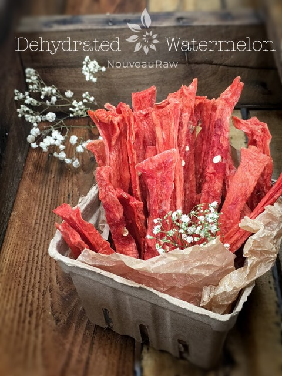
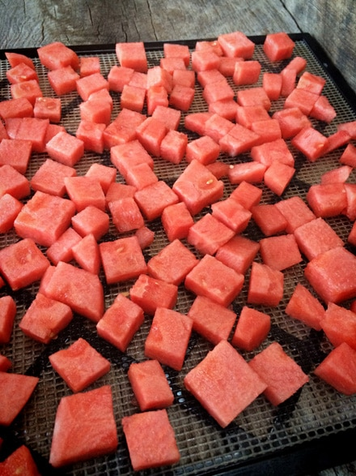
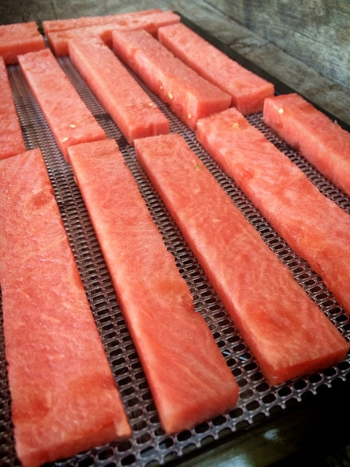

Dehydrated Watermelon

~ raw, dehydrated ~
Dehydrating watermelon is like creating a pure, whole food, single ingredient…. CANDY! It sort of reminds me of bubble gum, well as far as flavor goes. Unfortunately, you won’t be able to blow bubbles with it.
The texture can go anywhere from crispy to chewy, it just depends on how long you leave it in the dehydrator. Drying the watermelon definitely concentrates the sweetness, also there is a lot of water in watermelon, 92% in fact, so be prepared for major shrinkage.
Did you know that watermelon is both a fruit and a vegetable? It is a fruit because it contains seeds. It is thought of as vegetable because it is a member of the same family as the cucumbers, pumpkin, and squash. I am not sure how I feel about this. I think in my minds-eye, it will always be a fruit.
As a child, my great-grandmother would tell me that if I swallowed the watermelon seeds, watermelons would grow out of my bellybutton. I use to stare in awe down at my belly button… the source of life. I was convinced that babies were born out of there too, not because of what others told me, but because of an overactive brain.
Because I loved watermelon sooo much, I would eat large quantities, enough to make my tummy expand. Of course, as a child, I didn’t understand the word “bloat”… so when my belly would puff out, my eyes would grow large as I stared down at my expanding belly…. was I growing a watermelon or a….baby?!!! Times were scary back then. haha
Did you know that watermelon is exceptionally rich in lycopene (hence its red color) and other carotenoids such as lutein and beta-carotene. Lycopene has been found to have over 40 potential health benefits, and beta carotene too. I can safely say that as a child, I was rich in lycopene and beta-carotene. :)
As I was dehydrating the watermelon last week, I had a total of 27 trays going at once. The humidity that it put in the air was startling and amazing, it was almost like a watermelon infused spa treatment. Well, that about sums it up for now. If you haven’t dehydrated watermelon before, I encourage you to give it a try. But don’t feel that you have to do 27 trays at one time. Blessings!
Preparation:
- Remove the rind and cut the watermelon into desired shapes and sizes.
- Place the watermelon on the mesh sheets that come with the dehydrator.
- Dry at 145 degrees (F) for 1 hour, then reduce to 115 degrees (F) for 6-8 hours or until dry.
- The dry time will vary depending on the machine you are using, the climate you live in, humidity and how full the dehydrator is. It will also depend on thick or thin you cut the pieces.
- Store in an airtight container for 3-12 months.
Culinary Explanations:
- Why do I start the dehydrator at 145 degrees (F)? Click (here) to learn the reason behind this.
- When working with fresh ingredients it is important to taste test as you build a recipe. Learn why (here).
- Don’t own a dehydrator? Learn how to use your oven (here). I do however truly believe that it is a worthwhile investment. Click (here) to learn what I use.

To create candy-like bits of watermelon, jus cut into cube shapes.

To create watermelon sticks (jerky) slice the watermelon into long thick strips. Remember, it will reduce by at least 50 % during the drying process.
© AmieSue.com